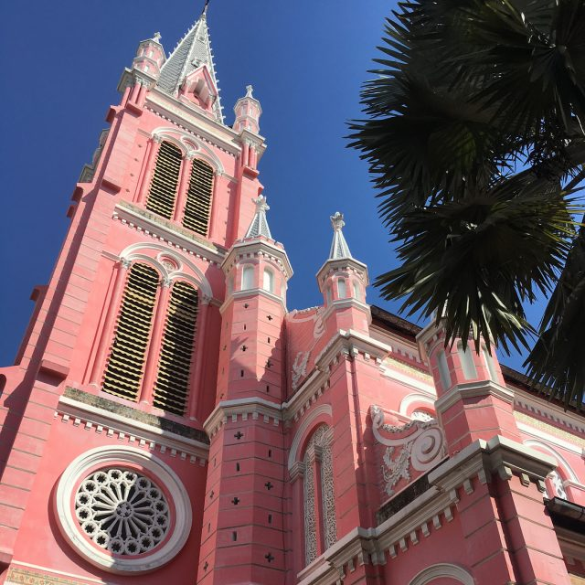

Còn có tên là nhà thờ Thánh Tâm Chúa Giêsu là một địa điểm mà gần đây đây nhanh chóng thu hút du khách trong nước và quốc tế đến đây thăm quan. Điều mà hấp dẫn du khách khi đến đây chính là Nhà Thờ mang màu sắc hồng trông thật xinh xắn dễ thương, nổi bật ngay giữa lòng Sài Gòn.
Tọa lạc ở số 289, Hai Bà Trưng, Phường 8, Quận 3 nằm trên đường phố nhộn nhịp dòng người xe qua lại nên du khách dễ dàng di chuyển mọi phương tiện tới đây. Có thể là đi xe máy, ô tô, taxi hoặc là xe buýt. Từ các quận 2, quận 4 hay quận 1, quận 7, du khách đều có thể dễ dàng đi tới đây mất chừng 20 phút – 30 phút. Nếu du khách chọn đi xe buýt cũng rất tiện lợi, chỉ việc bắt xe số 63 là đến nơi.

Nhà thờ Tân Định được xây dựng năm 1870, đây gần như là nhà thờ cổ nhất thành phố. Cho đến năm 1929, nhà thờ được mở rộng và xây thêm một tòa tháp cao 52.60m sơn sửa lại tháp chuông. Mang phong cách Roma cổ điển với kiến trúc độc đáo được khoác trên mình màu áo hồng tươi mới tạo nên một vẻ đẹp lộng lẫy trong ánh nắng Sài Gòn.
Đi vào sâu bên trong Thánh đường, du khách sẽ choáng ngợp trước kiến trúc cổ kính với hai hàng cột Gô-Tích dẫn tới bàn thờ chính. Đa số các bàn thờ trong Thánh đường được làm từ các loại đá quý gửi từ Italia sang. Nếu để ý kỹ du khách sẽ nhận ra ngay hàng cột bên trái là tượng các Thánh nữ, hàng cột bên phải là tượng các Thánh Nam. Bên trong tòa tháp có 5 quả chuông nặng khoảng 5.5 tấn tạo nên một bức tranh kiến trúc độc đáo được chạm khắc rất tinh xảo, du khách như đi lạc vào thành phố Ý thơ mộng, cổ điển cảm giác thú vị mà ai cũng muốn được một lần đặt chân đến.
Là một công trình kiến trúc có giá trị văn hóa nhưng đây còn là nơi tổ chức các hoạt động từ thiện cũng như là điểm đến của bà con theo đạo tới đây thờ phụng, cầu nguyện mọi điều tốt lành, bình an hay lắng nghe những buổi giảng tại Thánh đường. Tưởng chừng như du khách đang ngồi trong một ngôi nhà thờ ở Châu Âu với không gian rộng lớn, đậm nét cổ điển.
Thăm quan hết một vòng, ngắm nhìn kiến trúc nhà thờ Tân Định. Lắng nghe tiếng chuông Thánh đường ngân nga từng hồi, ngắm nhìn hoàng hôn chiều xa dần với những áng mây lững lỡ trôi. Du khách dễ dàng tận hưởng những giây phút yên bình , nhẹ nhàng hiếm có giữa lòng thành phố ồn ào, náo nhiệt.